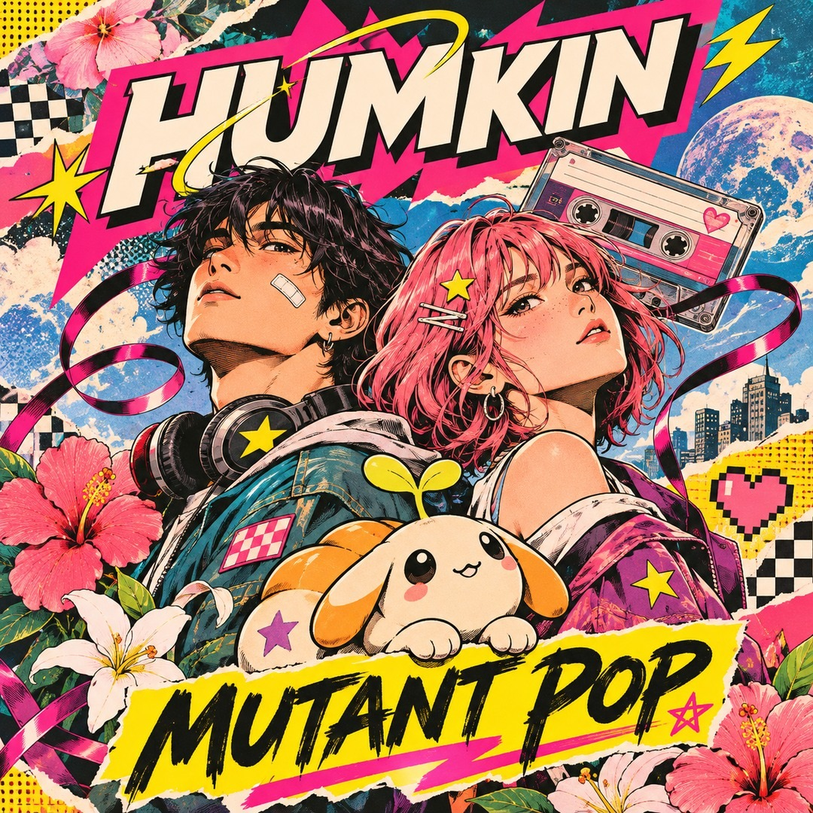

BOX 001 · LEAF 02DATE UNRECORDED
The Missing First Page
The oldest station log begins on page two. According to management, page one is still being used to hold a window open.
FICTIONAL STATION-LORE FILE · ONE CARD FROM THE ARCHIVETHE OPEN ROAD HAS A SOUNDTRACK
Music for the long way home.
Turn it on. Keep driving. Let the songs find you.

CONNECTING THE TUNER…
NOW ON THE DIAL
HUMKIN · RADIO
One shared live broadcast, with automatic continuation if the transmitter is unavailable. Road Shuffle makes your own personal rotation.
ON DECK · The station is getting its records together.
FROM THE OLD TAPE CABINET: Some announcers mention the hour, weather, requests, or signing off. Those are recorded station performances—not live clock readings, forecasts, a staffed telephone line, or a real shutdown. The songs keep playing.
Screen-off listening: For ROAD SHUFFLE, you can export the PHONE PLAYER PLAYLIST above and open its .m3u file in VLC or another native playlist-capable music player. This downloads the playlist, not the songs; internet is still needed. It does not carry timed shows. The browser radio may pause when Android suspends its tab.
Checking Station One…
Checking the transmitter.
HUMKIN RADIO · THE RECORD LEAGUE
Make a daily EP. Compile a weekly album. Real listens decide the chart—and a little piece of tomorrow's radio.
DEPARTMENT OF RECORDS · BOX STILL OPEN
Every station has a first broadcast. Ours has a second page. The filing cabinet has apparently been here longer than the building.
OPEN THE STATION ARCHIVE ↗BOX 001 · LEAF 02DATE UNRECORDED
The oldest station log begins on page two. According to management, page one is still being used to hold a window open.
FICTIONAL STATION-LORE FILE · ONE CARD FROM THE ARCHIVEA STATION YOU CAN CARRY
Four ways to listen. Station One Live carries the Acer's actual shared broadcast when it's running. Long Wave is a separate personal rotation when the transmitter is offline. Same-time radio uses a shared clock so listeners arriving together hear approximately the same part of the rotation. Road shuffle plays continuously in a different, repeat-free order on your own device.
Same-Time and Road Shuffle are optional browser-built modes. Only Station One shares one live audio program among listeners. It requires the Acer and Cloudflare; Long Wave uses Cloudflare and R2 without the Acer. Browser background playback still depends on the device.
Loading the separate browser-radio catalog…
ONE IMPORTANT DISTINCTION
Station One is a shared internet broadcast encoded on the Acer and distributed as HLS via Cloudflare R2. Listeners share the programmed audio, but devices may join at different buffered positions. Long Wave is an independent per-listener MP3 rotation; the browser clock and Road Shuffle are not the same live signal. This is not terrestrial FM or a native Android Auto app. The full-album homepage remains independent.
Listening on personal devices is different from playing recordings over a business sound system. Venue, composition and any applicable broadcast permissions remain separate matters. How the real broadcast upgrade works ↗